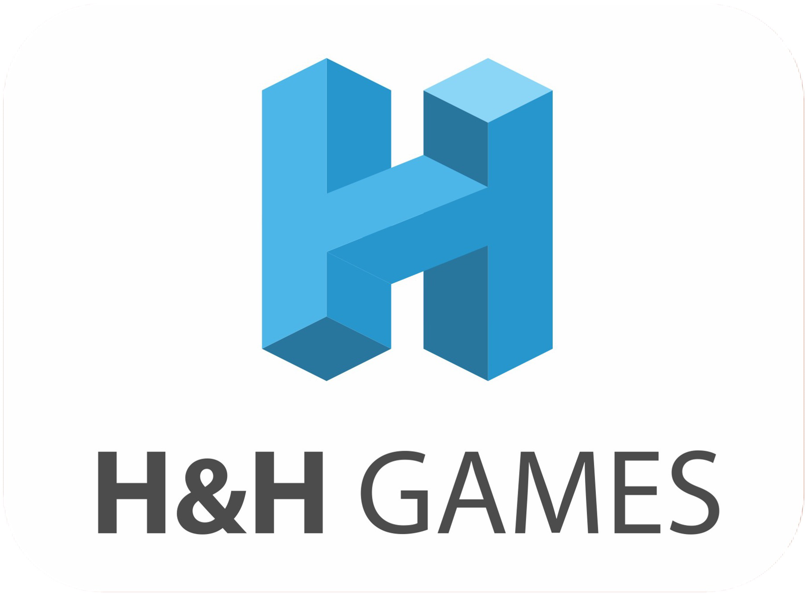
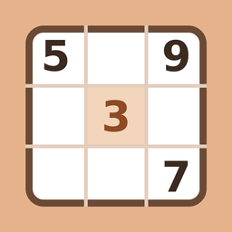
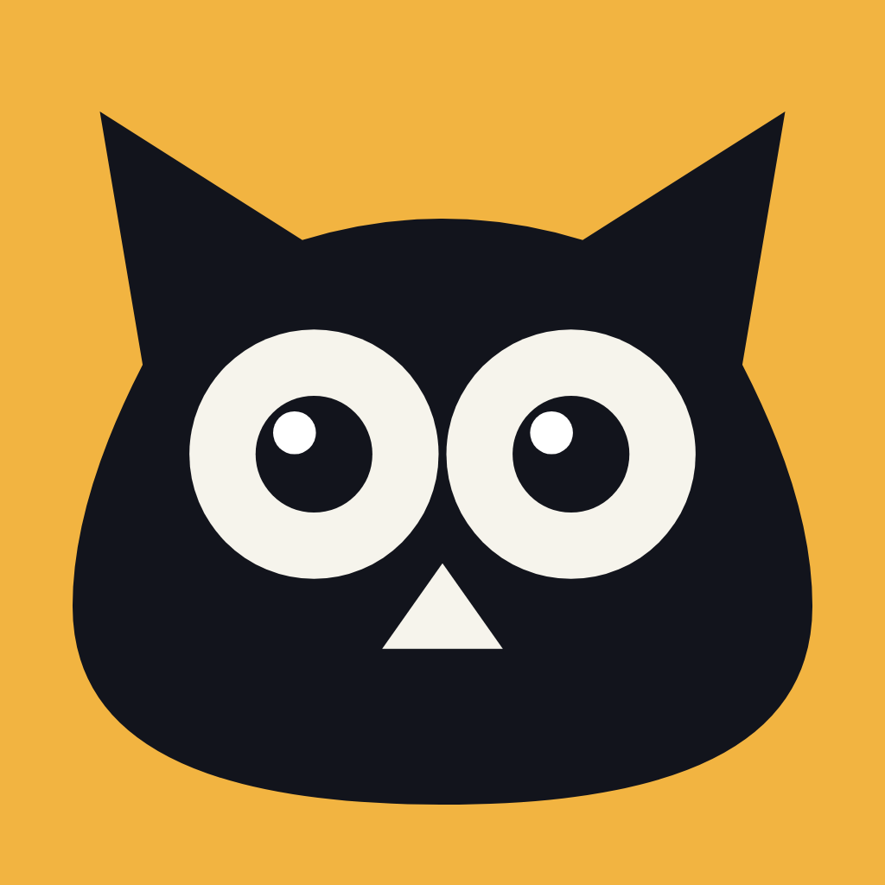

A clean, classic sudoku with six difficulty levels, pencil marks, hints and per-level statistics. Every puzzle is checked to have exactly one solution, so you never have to guess. Works fully offline in twelve languages.

A 614-level puzzle journey where each board builds a new solving technique. Hints teach by example, not formula. The difficulty curve self-adjusts based on what players struggle with. Fully offline, works in any language.